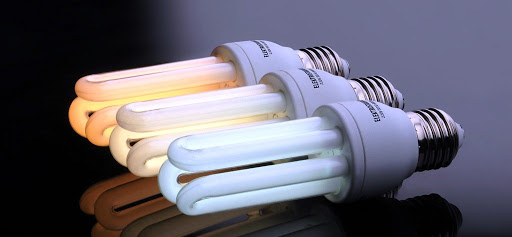

Сейчас мы разберёмся
какая лампочка самая экономная

Лампа накаливания — искусственный источник света, в котором свет испускает тело накала, нагреваемое электрическим током до высокой температуры. В качестве тела накала чаще всего используется спираль из вольфрама либо угольная нить.
Преимущества:
- Низкая цена
- Приятный и привычный в быту спектр
Недостатки:
- Малый срок службы всего 2000 часов.
- Световой коэффициент полезного действия весьма мал и не превышает 4 %.
Люминесцентная лампа — газоразрядный источник света, в котором электрический разряд в парах ртути генерирует ультрафиолетовое излучение, которое переизлучается в видимый свет с помощью люминофора
Преимущества:
- Энергопотребление снижено на 60-70 % по сравнению с лампами накаливания.
- Долгий срок службы. Средний срок службы люминесцентных ламп составляет 10000 — 12000 часов.
Недостатки:
- Чувствительность к перепадам напряжения.
- Пары ртути опасные для здоровья.
Светодиод — полупроводниковый прибор с электронно-дырочным переходом, создающий оптическое излучение при пропускании через него электрического тока в прямом направлении.
Преимущества:
- Светодиоды в 9 раз экономичнее ламп накаливания.
- Долговечность. Светодиодные модели способны прослужить своему хозяину от 30 000 до 50 000 часов.
Недостатки:
- Высокая стоимость. В среднем светодиодные модели стоят в 8 раз дороже ламп накаливания.
- Выгорание светодиодов. Светодиод имеет свойство выгорать (деградировать) и постепенно терять свою яркость. За 3 — 5 лет светодиод теряет до 10 % яркости.
Наиболее наглядным вариантом сравнения всех четырех типов ламп является представление их основных эксплуатационных характеристик в виде сводной таблицы. При этом для обеспечения равенства условий оценки всех изделий за основу взята лампа со световым потоком в пределах 700-800 люмен. Такая величина обеспечивается стандартной лампочкой накаливания мощностью в 75 Ватт.
| Параметр сравнения | Лампа накаливания | Люминесцентная лампа | Светодиодная лампа |
|---|---|---|---|
| Потребляемая мощность, Вт | 75 | 15 | 10 |
| Нагрев | Сильный | Средний | Низкий |
| Прочность конструкции | Очень хрупкая | Хрупкая | Прочная |
| Срок службы, часов, усреднено | 1 000 | 7 000 - 10 000 | 30 000 - 50 000 |
| Простота установки/замены | Хорошо | Отлично | Отлично |
| Экологичность | Хорошо | Удовлетворительно | Отлично |
Тест светодиодных ламп показывает, что данная разновидность лампочек на сегодняшний день является самой совершенной в области осуществления искусственного освещения. В последнее время развитие технологий сильно возросло и это очень сильно повлияло на снижение цены для производства светодиодной продукции. Эти лампы являются самыми экономичными и имеют самый долгий срок эксплуатации. Лампы со светодиодами имеют аналогичные технические характеристики, что и лампы накаливания. Отличительной особенностью этих ламп является способность работать от разного напряжения, в пределах – от 12 Вольт до 220 В.
Стоит отметить, что светодиодные лампы являются оптимальным выбором для современного человека, они имеют ряд неоспоримых преимуществ и позволяют значительно сократить денежные траты за электроэнергию. Хотя их цена и выше остальных аналогов, но также и срок службы значительно дольше и энергопотребление меньше. В итоге при длительной эксплуатации светодиодных ламп вы останетесь в плюсе.